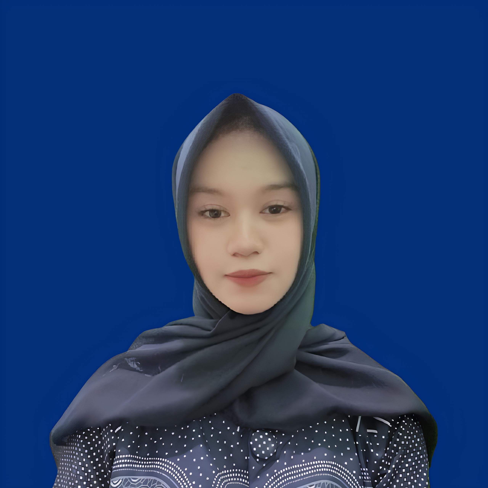

Nama Lengkap
Tasya Nuraeni
Tanggal Lahir
25 Juni 2008
tasyanuraeni1104@gmail.com
No. HP
087733505991
Alamat
Kab. Tasikmalaya, Kec. Puspahiang
Tentang Saya
Rekayasa Perangkat Lunak
Hallo Saya Tasya Nuraeni, Saya memiliki minat dan ketertarikan yang kuat dalam bidang teknologi dan pengembangan perangkat lunak. Saya terbiasa belajar hal baru dengan cepat, memiliki semangat belajar yang tinggi, serta mampu bertanggung jawab dalam menyelesaikan tugas dan proyek pemrograman. Saya terus berusaha mengembangkan kemampuan dalam coding, logika pemrograman, dan teknologi informasi, sehingga mampu beradaptasi dengan perkembangan dunia IT dan siap menghadapi tantangan di bidang RPL.
LIHAT CV SAYA